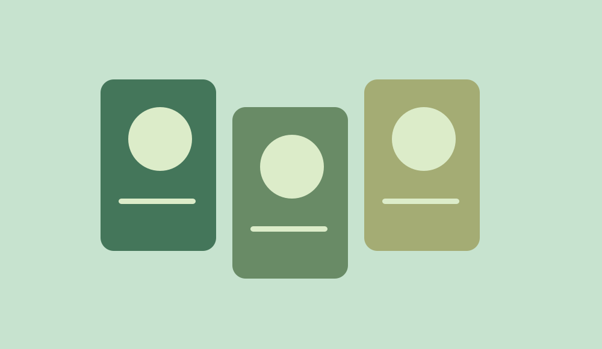
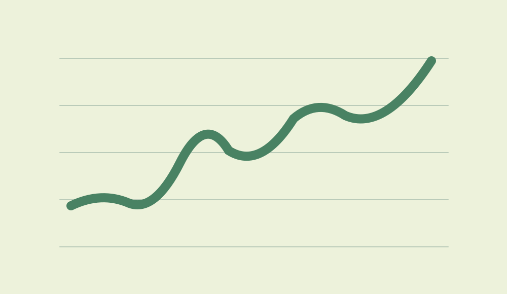
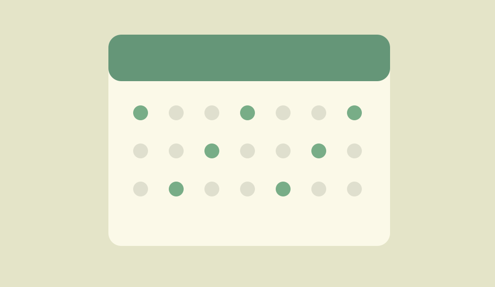

هدفگذاری
قلکهای جداگانه
برای سفر، آموزش و خرید دلخواهت یک قلک مستقل بساز.
برای چیزهایی که دوست داری هدف بگذار. با قدمهای کوچک و یک تصویر روشن از پولت جلو برو.
ابزارهایی کوچک برای نظم دادن به عادتهای مالی روزانه.

برای سفر، آموزش و خرید دلخواهت یک قلک مستقل بساز.

روند پسانداز و فاصله تا هر هدف را ببین.

مبلغ و روز دلخواهت را برای کنار گذاشتن پول مشخص کن.
برای یک هدف ۶۰ میلیون تومانی، مبلغ پسانداز ماهانهات را انتخاب کن.
چیزی را بنویس که برایش پسانداز میکنی.
مبلغ هدف را کنار سهم ماهانه قرار بده.
هر ماه با یک نگاه ببین چهقدر نزدیکتر شدهای.
یک ریتم سبک برای پسانداز انتخاب کن. میتوانی هر زمان مقدار یا فاصله را تغییر بدهی.
در پایان هفته بخشی از خرجهای انجامنشده را به قلک هدفت اختصاص بده.
همزمان با دریافت درآمد، سهم مشخصی برای هر هدفت کنار بگذار.
هر بار که امکانش را داشتی مبلغی ثبت کن و تا رسیدن به هدف ادامه بده.
مبلغ هدف تقسیم بر پسانداز ماهانه میشود و نتیجه به ماه کامل بعدی گرد میشود.
فرم پایین صفحه را تکمیل کن. یک فایل متنی از انتخاب و توضیحاتت دریافت میکنی.
این قالب نمایشی است. با تکمیل فرم، خلاصهی درخواستت را به صورت فایل متنی دریافت میکنی.
 انتخاب این قالب
انتخاب این قالب